24 September 2026 · actual native UI captures. Click an image for full resolution. The report contains all 16 journeys, measured actions, relocation details and open questions.
Functional checks pass. Strict 60 Hz presentation qualification remains unresolved in both before and after workloads. After: zero audio overruns at 48 kHz / 512 frames.
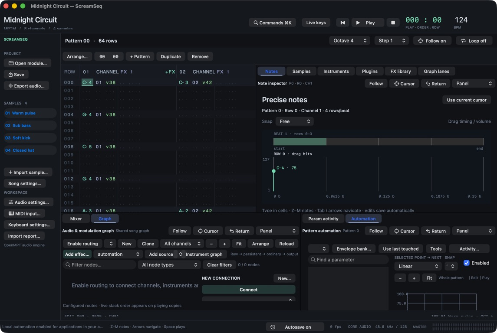
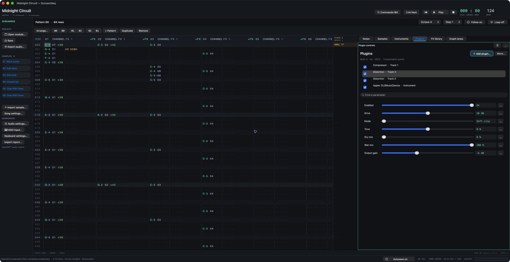
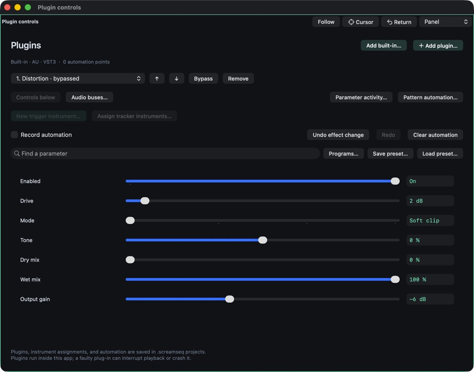
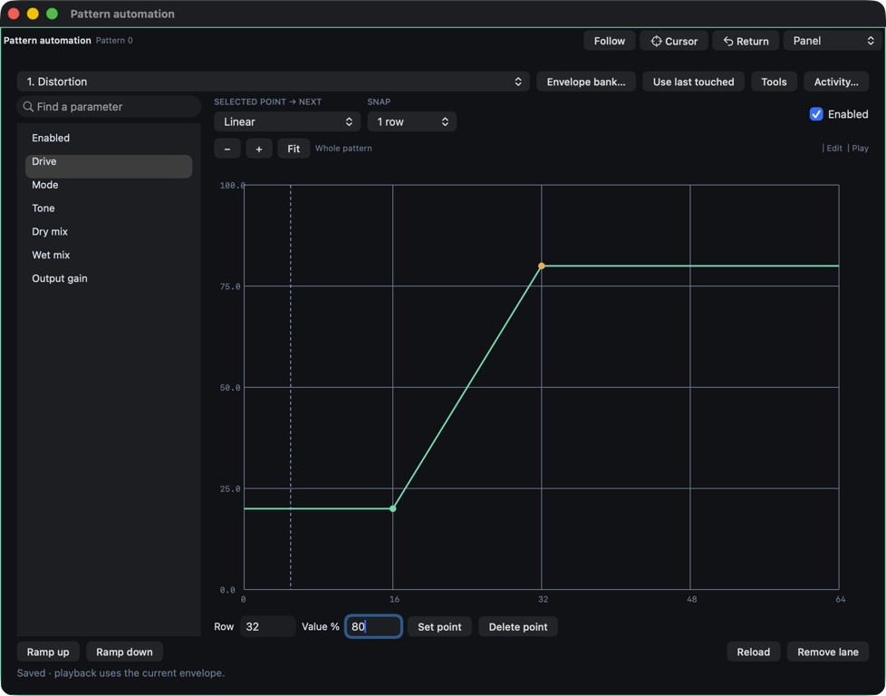
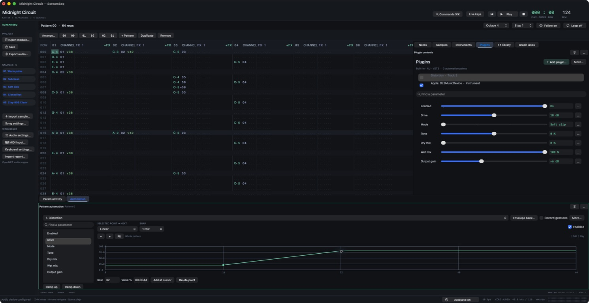
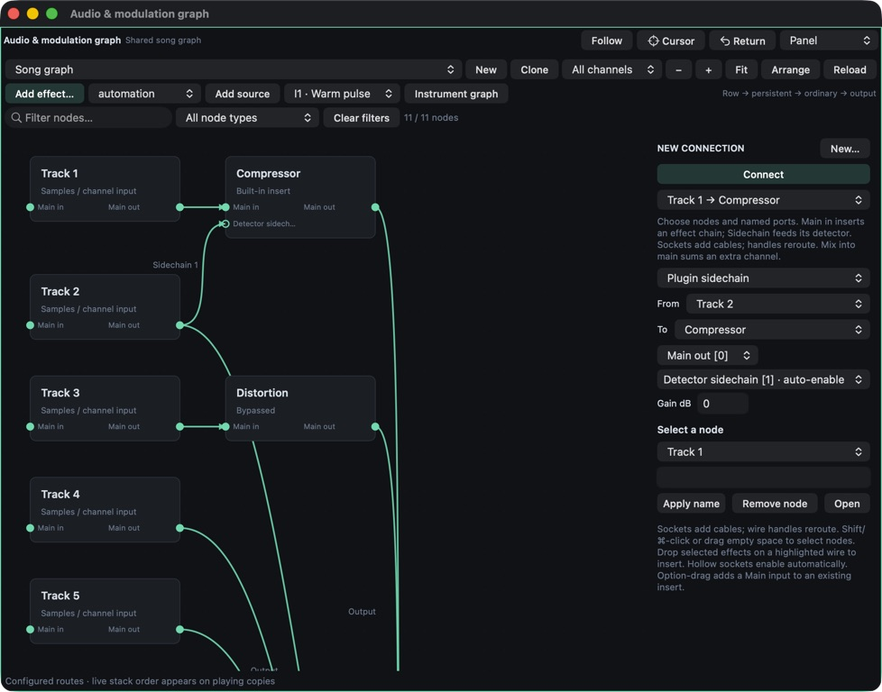
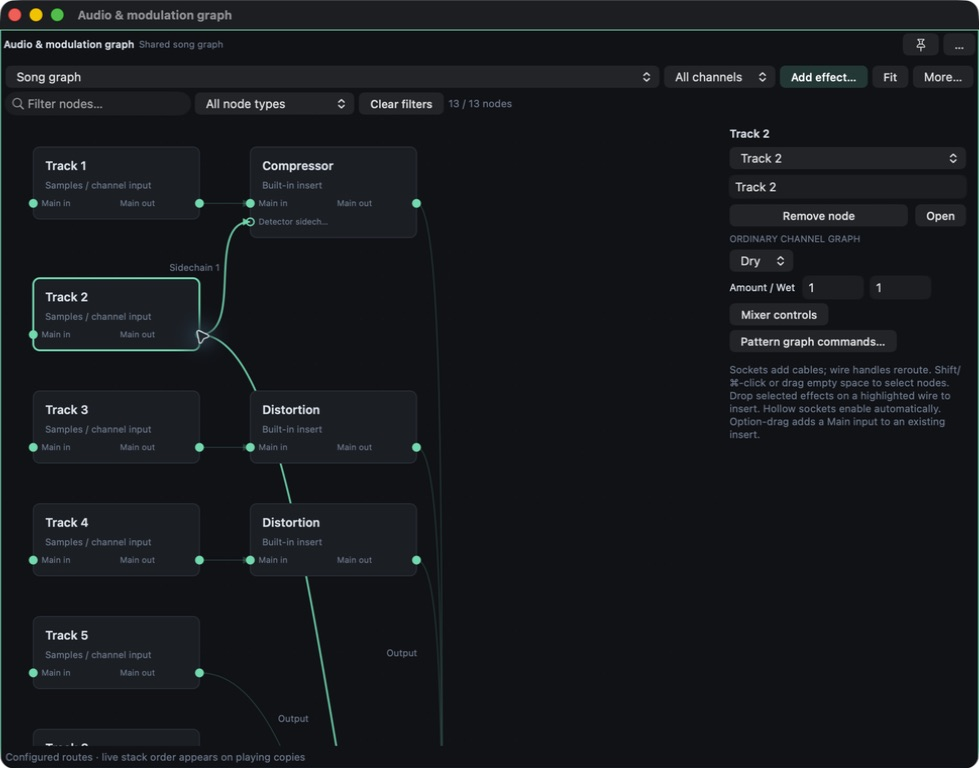
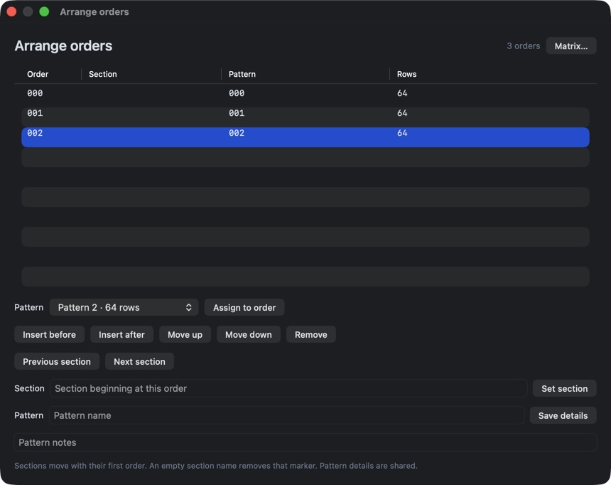
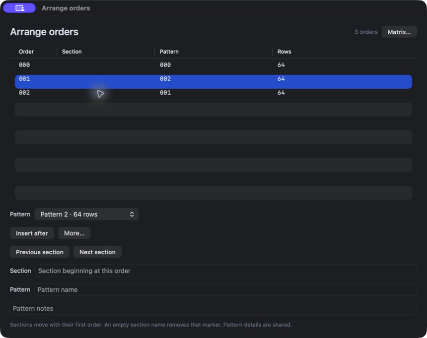
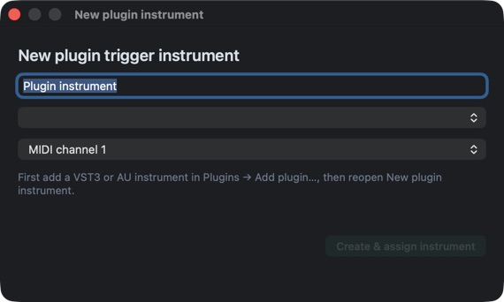
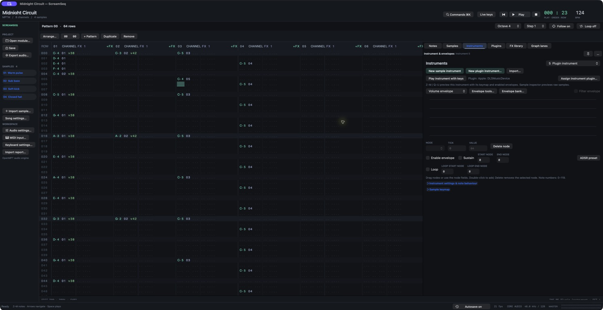
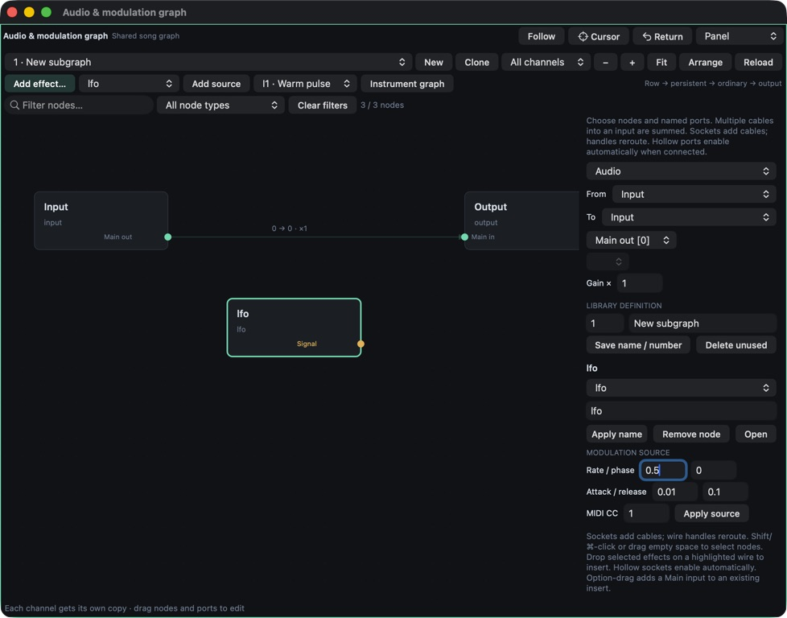
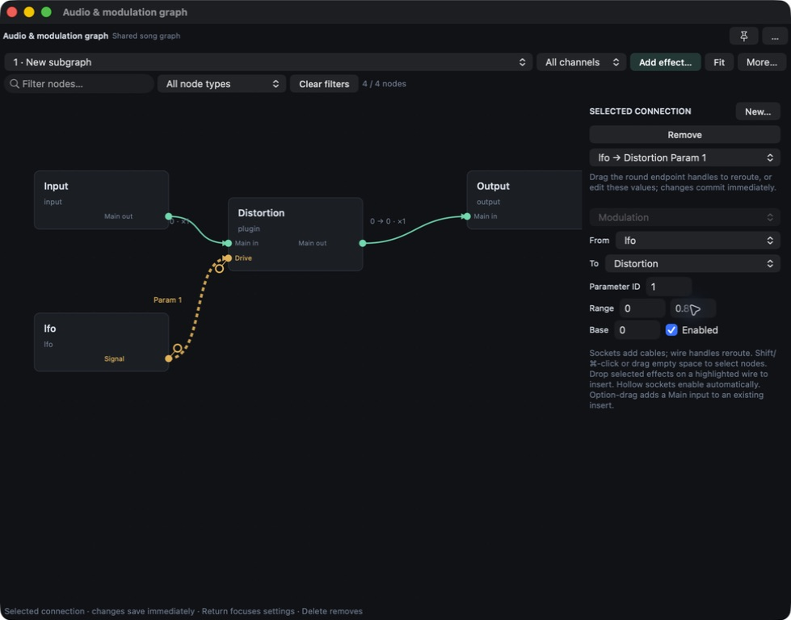